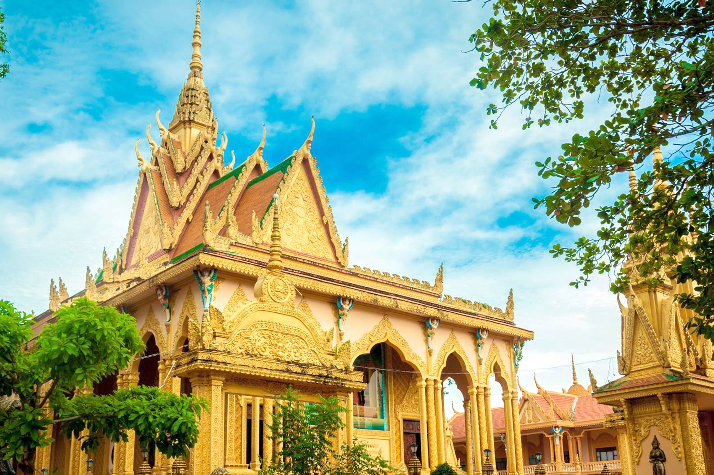

| Homepage | News | Form | About Me |
With strong Khmer architecture, Vam Ray Pagoda is Vietnam's largest Khmer
temple. Not just locals, but visitors from all over the world come to pray
and visit this site. Vam Ray Pagoda's unique form and brilliant golden
color immediately conjure up images of the Golden Temple's distant region.
With its one-of-a-kind, award-winning architecture. The Vam Ray pagoda has
helped to provide the Tra Vinh province's cultural tourist sector, as well
as the Khmer Nam Bo pagoda system, a new face.
The Vam Ray Pagoda is Vietnam's largest Primitive Buddhist pagoda. The
pagoda is constructed in the Angkor style of architecture. Vam Ray Hamlet
is located in Ham Tan Commune, Tra Cu District, Tra Vinh Province. It has
been around for more than 600 years. To preserve the relic, Mr. Tram Be, a
Buddhist from the pagoda, funded the restoration and construction of a new
structure for three years at a cost of one million dollars.
The Vam Ray Pagoda is built in the Angkor architectural style, which is the pagoda's signature style. The pagoda features four gates, the main gate of which faces east, similar to the Khmer pagodas of the Mekong River Delta. The main gate is quite tall and large, and it is in the style of oriental temples' three-arched entrance gates, but the top is a layer of towers piled up. The entire gate is yellow in color. The gate's shape appears to be ancient and mysterious.
An extremely tall pillar, supported by columns shaped like Naga God Snakes, stands in the center of Vam Ray Pagoda and is utilized for burning candles during festivals. Naga God Snake used to appear to Buddha and defend pagodas in Buddhist culture.
Only a large Buddha statue, placed gravely in the highest position, can be found inside the Buddha. A few little Buddha statues have been relocated to a more accessible location. Everyone's attention is drawn to the Buddha by the basic worshipping style. The Buddha Temple has a wide, calm environment that makes Buddhists who are performing ceremonies feel comfortable. The Buddha statue traveling to Nirvana, with a length of 54 meters and a foundation the size of a long two-story building, stands to the southeast of the Buddha Temple. The entire statue, including the base, is yellow. My heart gets light and easy when I see the Buddha laying peacefully in a peaceful area.
Tourists that visit the Vam Ray Pagoda are informed about Tram Be, a Buddhist who donated a million dollars to renovate and rebuild the pagoda. The project began in 2003 and ended in 2008, much to the delight of the local Buddhist community. Mr., a guy with a nice heart, is worthy of respect. The Vam ray pagoda is located in a good traffic area. You may travel to Vam Ray Pagoda from Tra Vinh, Can Tho City, Ben Tre, or Soc Trang, among other places. It's fascinating to visit an old Angkor architectural style temple with the largest Khmer pagoda in Vietnam. When you decide to visit this unique location, you will not be sorry.
